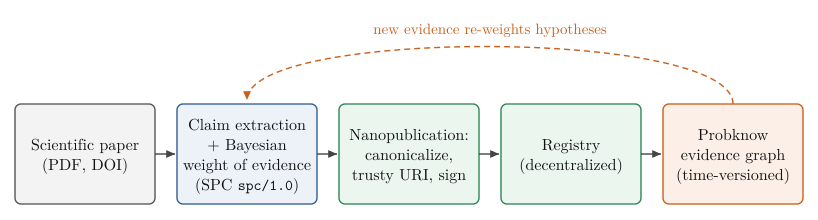
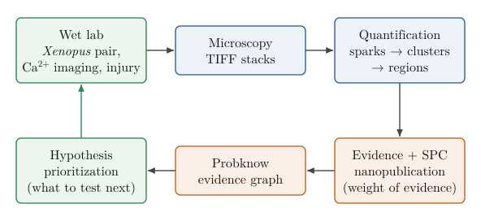

Accelerating Frontier Science with a Living, Probabilistic Evidence Graph
- Created
- Modified
Abstract
The rate-limiting step in frontier science is increasingly not generating data but synthesizing it: reading a flood of papers, weighing how strongly the evidence supports each hypothesis, and deciding what to test next. We describe Probknow, a system and methodology that accelerates this loop by maintaining a living, probabilistic evidence graph of a field. Nodes are hypotheses; edges are evidential and citation relations; node confidence is an explicit, aggregate weight of evidence (in decibans, derived from per-result Bayes factors via Vovk–Sellke calibration); and the whole graph is versioned through time so hypotheses can be watched as they strengthen or weaken—turning “where is this field heading, and what should we measure next?” into a query rather than a literature review. Under the hood, each claim is stored as a machine-readable, independently verifiable unit (a nanopublication) carrying its assertion, context, evidence links, and an agent-attributed Bayesian assessment; this substrate is what makes confidence computable, auditable, and reusable, but it is a means, not the end. In deployment the graph spans 4,886 papers, 48,561 extracted claims, and 1,299 hypotheses across 88 domains, with hypotheses optionally carrying a dated economic forecast and a cross-model probability panel. We ground the system in a bioelectricity case study—a corpus of eighteen “wave” claims from the Levin-lab regeneration and pattern-formation literature—and show the loop closing onto an active wet lab: calcium-imaging measurements of injured Xenopus embryo pairs are quantified, calibrated, and folded back in as new evidence, while the graph’s confidence gaps nominate the next bench experiment. We discuss how this accelerates discovery (front-and-center uncertainty, machine-actionable synthesis, experiment prioritization), its limitations (model-assisted assessment, independence assumptions, calibration as a bound), and the provenance practices required when large language models assist in evidence appraisal.
Keywords
- accelerating science
- living evidence graph
- hypothesis prioritization
- Bayesian weight of evidence
- evidence synthesis
- automated discovery
- bioelectricity
- nanopublications
Introduction
Frontier science advances through a loop: read what is known, weigh how strongly the evidence supports each competing hypothesis, design the experiment that would move belief the most, run it, and fold the result back in. As the literature grows—millions of papers per year, and still accelerating [2]—the rate-limiting step is increasingly not generating data but synthesizing it. The bottleneck is the human loop: no one can read, weigh, and reconcile a fast-moving field in their head, so synthesis lags discovery and experiments are chosen on partial pictures. The underlying obstacle is representational. The unit of scientific communication is still the human-readable article, and the claims it makes and the strength of the evidence behind them are rarely exposed in a form that a machine—or a busy human—can query, aggregate, or track over time. This contributes to well-documented problems: difficulty synthesizing fast-moving fields, fragility of conclusions that are asserted rather than weighed, and a reproducibility landscape in which the credibility of a finding is hard to read off the literature [7]. If we want to accelerate science, the loop itself—synthesis and the choice of the next experiment—is what must be made faster.
Three threads of prior work point toward a remedy but have not been combined into a single, web-native, probabilistic substrate. (1) Nanopublications [5] make an individual assertion a first-class, citable object on the web, bundled with its provenance. (2) Trusty URIs [10] and decentralized nanopublication registries [11] make such objects immutable, verifiable, and permanent, satisfying the FAIR principles [16]. (3) A long statistical tradition—Good’s weight of evidence [3, 4], Bayes factors [9], and the calibration of p-values into Bayes-factor bounds [15]—provides a principled scalar for “how strong is the evidence?”. Scholarly knowledge graphs such as the Open Research Knowledge Graph [8] structure claims, but typically without an explicit, propagating measure of evidential strength, and “living” evidence efforts [6] track strength but not as a web-native graph.
Contribution. We present Probknow, a system that fuses these threads:
- A structured probabilistic claim (SPC) schema (
spc/1.0) that attaches to every assertion its context, its evidence items with citation links, and a Bayesian weight-of-evidence assessment with explicit agent provenance (Section 4). - A Bayesian calibration that converts reported statistics into per-result Bayes factors via the Vovk–Sellke bound and combines them into a single weight of evidence in decibans (Section 5).
- A verifiable storage substrate that encodes each claim as a nanopublication—canonicalized, content-addressed with a trusty URI, signed, and replicable—so that confidence is computable, auditable, and reusable rather than locked in prose (Section 6).
- A living evidence graph that aggregates these probabilistic claims into a time-versioned map of hypotheses, with confidence as an aggregate weight of evidence, and that surfaces its own gaps as an experiment-prioritization signal (Section 7).
The emphasis throughout is on accelerating the discovery loop: the nanopublication substrate is the enabling machinery, while the contribution is a synthesis-and-prioritization layer that a lab can act on. We ground the system in a bioelectricity case study with a closed bench↔graph loop (Section 8) and discuss limitations and the epistemics of model-assisted appraisal (Section 9).
System Overview
Figure 1 shows the end-to-end pipeline. A source paper is read (by a human or a model-assisted extractor) into one or more structured probabilistic claims; each claim’s reported statistics are calibrated into a Bayesian weight of evidence; the claim is serialized as a nanopublication, canonicalized, content-addressed, and signed; the signed nanopublication is published to a registry and simultaneously ingested into the Probknow graph, where it becomes (or updates) a hypothesis node whose confidence reflects the aggregate weight of evidence and whose history is retained.

The system in deployment
Probknow is not only a design; it runs at corpus scale at probknow.com. As of June 2026 the deployed graph had ingested 4,886 papers (source literature spanning 1781–2026), from which a multi-model extraction pipeline pulled 48,561 discrete claims, clustered into 1,299 hypotheses across 88 domains (internally called “places”), with 216 cross-domain concept links. The deployed pipeline specializes the abstract flow of Figure 1 into five stages: (1) ingest papers from OpenAlex, PubMed, and Semantic Scholar; (2) extract discrete claims and an evidence weight with a multi-LLM pipeline; (3) synthesize related claims into named, hierarchical hypotheses; (4) forecast a dated economic prediction (market size and years-to-impact) for each; and (5) score a growing slice with a panel of frontier language models (Section 5.1). Fifty claims have so far been promoted to fully signed nanopublications—the verifiable substrate of Section 6—while the remainder live in the graph as lighter-weight nodes pending promotion. Table 1 summarizes the frontier-science landscape by theme.
| Theme | Domains | Papers | Hyps. | Claims |
|---|---|---|---|---|
| Autonomously discovered (deep-tech & bio scouts) | 40 | 2,575 | 395 | 25,001 |
| Mathematics → applications | 15 | 912 | 72 | 8,777 |
| Bioelectricity & regeneration | 2 | 486 | 119 | 5,745 |
| Insect technology (EntoTech) | 1 | 252 | 227 | 2,264 |
| Deep-tech hardware | 3 | 197 | 74 | 1,927 |
| Biocomputing & living materials | 1 | 121 | 53 | 1,132 |
| Rubidium & helium quantum science | 1 | 85 | 0 | 747 |
| Synthetic & engineered biology | 1 | 56 | 111 | 469 |
| Mind, pharmacology & psychedelics | 3 | 55 | 54 | 535 |
| Plasma materials computing | 1 | 54 | 39 | 516 |
| Neural interfaces & cognition | 2 | 31 | 21 | 587 |
| Capital allocation | 1 | 3 | 12 | 30 |
An economic prioritization layer. Beyond evidential strength, each hypothesis can carry dated economic predictions that move the question from “what is true?” toward “what is worth testing next?”. Across the corpus there are 7,338 such predictions with a sized market, totalling roughly $45.8 trillion in addressable value at an average of 6.0 years to achievement. This gives the experiment-prioritization signal of Section 7 a second axis—expected economic impact—orthogonal to the evidence weight, so a lab can rank candidate experiments by both how much belief and how much value a result would move. (These forecasts are model-generated and should be read as calibrated opinion, not investment advice.)
The Structured Probabilistic Claim
The atomic unit is a structured probabilistic claim (SPC), declared to conform to the schema spc/1.0. An SPC is more than a sentence: it is an assertion plus everything needed to weigh and re-use it. Its fields are:
- Assertion — a precise, falsifiable statement of the claim (
dcterms:description). - Context — the experimental system, model organism, intervention, and readout that scope the claim (
ex:context). - Evidence items — one or more discrete pieces of support (
ex:hasEvidence), each linkable to the literature with the Citation Typing Ontology [14] viacito:citesAsEvidence. - Assessment — a Bayesian weight-of-evidence appraisal (
ex:hasAssessment) carrying a combined Bayes factor, a weight of evidence in decibans, the calibration method, and—crucially—the agent that produced it (prov:wasAttributedTo).
This separation lets a downstream consumer accept the assertion, inspect the context, follow the evidence to its sources, and read the strength of support as a single calibrated number, all without parsing prose.
Bayesian Weight of Evidence
We score each claim by how strongly the reported results favor the working hypothesis H1 over a precise null H0. For a single result the Bayes factor is
and the weight of evidence [3, 4] in decibans is
Primary papers usually report a p-value rather than K. The Vovk–Sellke calibration [15] provides a defensible upper bound on the Bayes factor that a precise-null p-value can support,
and K(p) = 1 otherwise. Equation (3) is used conservatively: where a paper reports only a threshold (e.g. p < 0.01) we take the bound at the threshold, which under-states the evidence rather than overstating it.
Assuming approximate independence across n evidence items within a claim, Bayes factors multiply and weights of evidence add:
The independence assumption is recorded in the assessment description so that a reader can judge it; correlated evidence inflates Kcombined, so the number is best read as an optimistic, explicitly-bounded summary rather than a posterior. The additive deciban scale is what the graph layer propagates and what makes confidence comparable across claims and fields.
An independent model panel
The literature-derived weight of evidence above answers “how strong are the reported statistics?”. In deployment we complement it with an orthogonal estimate: a panel of up to six frontier language models (Claude Opus 4.6, GPT-5, OpenAI o3, Gemini 2.5 Pro, DeepSeek, and Grok 4.3) each independently assigns a probability that a given claim is true. Where the models agree, confidence is high; where they diverge, the spread is itself the signal and a built-in calibration check. To date 121 hypotheses carry such a panel, with 966 individual assessments. The per-model mean probabilities (Table 2) expose systematic scorer bias—Gemini is consistently the most generous and Grok the most skeptical—so the gap between them bounds a model-disagreement uncertainty that any single scorer would hide. The panel does not replace the Vovk–Sellke weight of evidence; it cross-checks it, and a disagreement between a strong reported statistic and a skeptical panel is exactly the kind of claim a curator should examine first.
| Model | Assessments | Mean probability |
|---|---|---|
| Gemini 2.5 Pro | 161 | 56.7% |
| DeepSeek | 160 | 42.5% |
| Claude Opus 4.6 | 161 | 41.7% |
| Grok 4.3 | 161 | 34.1% |
A Verifiable Substrate for Claims
For the graph’s confidence values to be trustworthy and reusable, each claim must be stored as an auditable, tamper-evident unit rather than re-extracted prose. We use nanopublications as that substrate. Each SPC is serialized as a nanopublication in RDF/TriG with the canonical four named graphs: Head, assertion, provenance, and pubinfo (Listing 1). The assertion graph holds the claim and its evidence links; the provenance graph records that the assertion was derived from the cited source (prov:wasDerivedFrom); and the publication-information graph carries the bibliographic citation, timestamps, license, the generating software agent, and the Bayesian assessment with its attributed agent. Identifiers live under a stable w3id.org namespace so they resolve persistently.
ex:claim-AML2007-C1 a ex:Assertion ;dcterms:description "V-ATPase-driven H+ flux is necessary for tailregeneration, and a concanamycin-insensitive H+ pump (PMA) issufficient to rescue regeneration under V-ATPase inhibition." ;cito:citesAsEvidence <https://doi.org/10.1242/dev.02812> ;ex:context "Xenopus laevis tadpole; amputation at stage 41; V-ATPaseinhibition; PMA H+ pump rescue; regeneration index at 7 dpa." ;ex:hasAssessment ex:assessment-AML2007-C1 ;ex:hasEvidence ex:evidence-AML2007-C1-E1 .# ... publication-information graph ...ex:assessment-AML2007-C1 a ex:BayesianAssessment ;ex:bayesFactorCombined 100588.890510 ;ex:weightOfEvidence_deciban 50.025500 ;ex:calibrationMethod "Vovk-Sellke p-value calibration" ;prov:wasAttributedTo <https://w3id.org/levin-kg/agent/gpt-5-pro> .
Canonicalization, trusty URIs, signing, registries. Before publication a claim is canonicalized (normalizing blank nodes and graph IRIs so logically identical content yields identical bytes), then assigned a trusty URI [10] whose suffix is a hash of that content. The nanopublication is signed with an author key bound to an ORCID, and published to a decentralized registry that replicates it [11]. The result is a permanent, verifiable, independently-citable claim: anyone can re-fetch it, re-hash it, and confirm both its integrity and its authorship.
The Living Evidence Graph
Published claims are ingested into Probknow, a graph whose semantics are summarized in Table 3. A node is a hypothesis or claim; an edge is an evidential, citation, or logical relation (supports, refutes, refines, depends-on); node confidence is an aggregate weight of evidence rolled up from the SPC assessments that bear on it; and every ingest is timestamped so the graph is a versioned object. Because confidence is carried on the additive deciban scale (Eq. 4), aggregation across claims and fields is a well-defined sum, and a hypothesis can be watched over time: as new nanopublications arrive, its confidence rises or falls, and the trajectory itself becomes data.
| Graph element | Backed by | Quantity / meaning |
|---|---|---|
| Node (hypothesis/claim) | SPC assertion(s) | statement under test |
| Edge | cito / prov relations | supports / refutes / refines |
| Node confidence | aggregated assessments | weight of evidence (deciban) |
| Edge weight | per-item Bayes factor | evidential contribution |
| Time slice | dcterms:created | versioned graph state |
| Field / domain | claim context | cross-field comparability |
Visually (as on the public Probknow map), node color encodes confidence and node size encodes evidence weight, and a timeline control replays how the graph for a field evolved. This turns “where is this field heading?” into a query rather than a literature review.
Case Study: Bioelectricity
We exercise the system on bioelectricity, the study of endogenous voltage and ion-flux signals that instruct growth and form [12, 13]. This is the most developed region of the deployed graph: the bioelectricity-and-regeneration theme spans 486 papers, 119 hypotheses, and 5,745 claims, and the Levin-lab subdomain alone (labeled L1–L9) accounts for 457 papers, 112 hypotheses, and 5,513 claims—making it the single most-developed domain in the corpus. It also anchors the economic layer: the largest single predictions attached to any hypothesis sit here, including an AI/device combination to reverse aging (∼$1 trillion) and pre-neural bioelectric platforms for whole-organ biofabrication (∼$120 billion). Within this subgraph we built a focused set of eighteen “wave” nanopublications (labeled A through R), each capturing one or more claims about ion-flux control of regeneration and patterning, with evidence linked to the primary papers by DOI and a Bayesian weight of evidence attached—the fully-signed, verifiable core of the larger Levin-lab region.
Listing 1 shows wave B: the claim that V-ATPase–driven H+ flux is necessary, and a concanamycin-insensitive H+ pump sufficient, for Xenopus tail regeneration [1]. Four evidence items from the source were each calibrated through Eq. (3) and combined under Eq. (4), yielding a combined Bayes factor of Kcombined ≈ 1.0 × 105 and a weight of evidence of W ≈ 50.0 deciban—“decisive” on Good’s scale—recorded together with the independence caveat and the assessing agent. One can verify the internal consistency directly: 10 log10(100588.89) = 50.03 deciban, matching the stored value.
Closing the loop with the wet lab
The graph is not only fed by the published literature; in this project it is also fed by, and feeds back into, an active wet lab. Figure 2 shows the cycle. At the bench, pairs of Xenopus laevis embryos expressing a calcium reporter are imaged by time-lapse fluorescence microscopy while one embryo (“A”) receives a controlled mechanical injury (a “poke”), in both direct-contact and no-contact configurations and in different head/tail orientations. The microscope emits multi-page TIFF stacks, which a quantification pipeline (the wave-vector-analysis tooling in the project repository) turns into numbers: it detects bright calcium “sparks” frame by frame, tracks them, segments the two embryos, assigns head/tail and anterior–posterior coordinates, maps events onto a normalized region atlas, and rolls per-frame detections up into per-cluster wave vectors (spark_tracks.csv → vector_clusters.csv).

These measurements are exactly the evidence items the SPC schema expects. A wet-lab observation such as “injuring embryo A raises calcium activity in both embryos” becomes a claim whose evidence is a measured post-injury activity ratio; “the response in B is a directional wave” becomes a claim backed by measured wave directions (mean ≈ 5–21°) and speeds (≈ 3–4 px s−1); “the local response co-locates with the wound” becomes a claim backed by a measured distance-from-poke distribution. Each such observation is calibrated (Section 5), serialized as a nanopublication (Section 6), and ingested into Probknow as a new evidence node attached to the corresponding literature hypothesis—the dashed re-weighting arrow of Figure 1, now realized with primary data rather than only re-read papers.
Crucially, the graph also points back toward the bench. Because every hypothesis carries an explicit weight of evidence and an explicit set of evidence items, the graph makes its own gaps legible: some hypotheses are already well-supported, some are only partially testable with the data in hand, and some are not yet testable at all because they require conditions or metadata the current assay does not capture (for example, a graded distance series, embryo-age staging, or a contraction readout). That triage—which under-supported or untestable node would move the most evidence weight if measured next—is precisely an experiment-prioritization signal. The loop is therefore closed in both directions: bench measurements raise or lower confidence in graph hypotheses, and the graph’s confidence gaps nominate the next bench experiment.
Discussion
How this accelerates discovery. The payoff is a faster discovery loop. Synthesis that previously required reading and mentally reconciling a field becomes a query over a graph whose node confidences are explicit and comparable; uncertainty is front-and-center rather than buried in a results section; and because the graph is time-versioned, the dynamics of belief are observable rather than reconstructed after the fact. Most directly, the graph’s confidence gaps act as an experiment-prioritization signal, shortening the path from “what is known” to “what to measure next.” That claims also become verifiable, citable, machine-readable objects is what makes this computable—but it is the means, not the goal.
Model-assisted appraisal and provenance. In our corpus the Bayesian assessments were produced with the assistance of a large language model, recorded explicitly as a software agent via prov:wasAttributedTo. We regard transparent agent attribution as a requirement, not an option: a reader must be able to see that an appraisal was model-assisted, which model, and under what stated assumptions, so that it can be audited or redone. The nanopublication substrate makes this provenance non-optional and immutable.
Limitations. (1) The Vovk–Sellke value is a bound, not a posterior; reported strengths are optimistic by construction and should be read as upper limits. (2) The independence assumption in Eq. (4) is frequently violated by multiple readouts of one experiment; we mitigate by recording it, but correlated evidence inflates the combined factor. (3) Claim extraction and calibration are only as good as the (possibly model-assisted) reader, motivating the strict provenance above. (4) Registries deliberately do not support bulk upload, so publishing at scale requires either rate-limited batching or operating one’s own registry node.
Effect size, not just significance. A weight of evidence derived from a p-value answers “how surprising are these data under the null?” but is silent on “how large is the effect?”—and at the small sample sizes typical of frontier experiments the two can diverge sharply. We therefore pair each calibrated p-value with a nonparametric effect-size estimate (Cliff’s δ for two-group contrasts, the matched-pairs rank-biserial correlation for paired designs), so that a claim node carries both a strength-of-evidence and a magnitude. This is more than bookkeeping: the combination defines a useful triage state for the wet lab. A large effect that is not yet significant—a real-looking signal that is simply underpowered—is exactly the confidence gap the graph should flag as a high-value next experiment, whereas a significant but negligible effect (common with large n) warns against over-promoting a claim. In the bioelectricity case study these effect sizes are computed with nonparametric, paired, and batch-aware tests appropriate to small, non-normal, clutch-clustered calcium-imaging data.
Future work. Principled handling of dependent evidence; community curation and counter-nanopublications that refute or refine existing claims; calibration against held-out replication outcomes; carrying effect-size magnitude alongside the weight of evidence as a second confidence coordinate that drives experiment prioritization; and richer edge semantics for mechanistic chains.
Conclusion
We described Probknow, a system and methodology for accelerating frontier science by maintaining a living, probabilistic evidence graph that synthesizes a field and prioritizes its next experiments. Confidence is an explicit, additive Bayesian weight of evidence; the graph is versioned so that belief can be watched as it evolves; and a verifiable nanopublication substrate—the enabling machinery, not the headline—makes that confidence computable, auditable, and reusable. A bioelectricity case study shows the loop closing onto an active wet lab, from primary measurement to calibrated evidence node to a prioritized next experiment. The aim is a literature one does not only read, but can query, weigh, watch—and act on.
Reproducibility. The nanopublication corpus, the SPC schema, and the publishing/canonicalization tooling used here are available in the project repository; each published claim is independently verifiable through its trusty URI.
References
- Dany S. Adams, Alessio Masi, and Michael Levin. H+ pump-dependent changes in membrane voltage are an early mechanism necessary and sufficient to induce Xenopus tail regeneration. Development, 134(7):1323–1335, 2007. doi: 10.1242/dev.02812.
- Lutz Bornmann and Rüdiger Mutz. Growth rates of modern science: A bibliometric analysis based on the number of publications and cited references. Journal of the Association for Information Science and Technology, 66(11):2215–2222, 2015. doi: 10.1002/asi.23329.
- Irving John Good. Probability and the Weighing of Evidence. Charles Griffin, London, 1950.
- Irving John Good. Weight of evidence: A brief survey. Bayesian Statistics, 2:249–270, 1985.
- Paul Groth, Andrew Gibson, and Jan Velterop. The anatomy of a nanopublication. Information Services & Use, 30(1–2):51–56, 2010. doi: 10.3233/ISU-2010-0613.
- Tari Turner Hoffmann et al. Living systematic reviews: towards real-time evidence for health-care decision-making. BMJ, 363:k4823, 2018. doi: 10.1136/bmj.k4823.
- John P. A. Ioannidis. Why most published research findings are false. PLoS Medicine, 2(8):e124, 2005. doi: 10.1371/journal.pmed.0020124.
- Mohamad Yaser Jaradeh, Allard Oelen, Kheir Eddine Farfar, Manuel Prinz, Jennifer D’Souza, Gábor Kismihók, Markus Stocker, and Sören Auer. Open research knowledge graph: Next generation infrastructure for semantic scholarly knowledge. In Proceedings of the 10th International Conference on Knowledge Capture (K-CAP), pages 243–246, 2019. doi: 10.1145/3360901.3364435.
- Robert E. Kass and Adrian E. Raftery. Bayes factors. Journal of the American Statistical Association, 90(430):773–795, 1995. doi: 10.1080/01621459.1995.10476572.
- Tobias Kuhn and Michel Dumontier. Trusty URIs: Verifiable, immutable, and permanent digital artifacts for linked data. In The Semantic Web: Trends and Challenges (ESWC 2014), volume 8465 of Lecture Notes in Computer Science, pages 395–410. Springer, 2014. doi: 10.1007/978-3-319-07443-6_27.
- Tobias Kuhn, Christine Chichester, Michael Krauthammer, Núria Queralt-Rosinach, Ruben Verborgh, George Giannakopoulos, Axel-Cyrille Ngonga Ngomo, Raffaele Viglianti, and Michel Dumontier. Decentralized provenance-aware publishing with nanopublications. PeerJ Computer Science, 2:e78, 2016. doi: 10.7717/peerj-cs.78.
- Michael Levin. Molecular bioelectricity: how endogenous voltage potentials control cell behavior and instruct pattern regulation in vivo. Molecular Biology of the Cell, 25(24):3835–3850, 2014. doi: 10.1091/mbc.E13-12-0708.
- Michael Levin. Bioelectric signaling: Reprogrammable circuits underlying embryogenesis, regeneration, and cancer. Cell, 184(8):1971–1989, 2021. doi: 10.1016/j.cell.2021.02.034.
- Silvio Peroni and David Shotton. FaBiO and CiTO: ontologies for describing bibliographic resources and citations, 2012.
- Thomas Sellke, M. J. Bayarri, and James O. Berger. Calibration of p values for testing precise null hypotheses. The American Statistician, 55(1):62–71, 2001. doi: 10.1198/000313001300339950.
- Mark D. Wilkinson, Michel Dumontier, IJsbrand Jan Aalbersberg, et al. The FAIR guiding principles for scientific data management and stewardship. Scientific Data, 3:160018, 2016. doi: 10.1038/sdata.2016.18.